**Homework 4**
Student name: Qiyuan Dong
Sciper number: 307612
Area lights (25 pts)
====================
## Shape
- I created a new abstract class `Shape` as the base class for `Mesh`, `Sphere`, `Disk`, and `Rectangle`, which defines some interfaces to sample points over the shape. Having this class more convenient for the hacker point task.
- `Shape` has the following interfaces:
~~~cpp
virtual float samplePoint(Sampler* sampler, Point3f &p, Normal3f &n) const = 0;
virtual float pdf() const = 0;
virtual float samplePoint(const Point3f &ref, const Normal3f &ref_n, Sampler* sampler, Point3f &p, Normal3f &n, bool &over_area) const = 0;
virtual float pdf(const Point3f &ref, const Normal3f &ref_n, const Vector3f &wi, bool &over_area) const = 0;
virtual float getAreaSum() const = 0;
virtual bool rayIntersect(const Ray3f &ray) const = 0;
~~~
- `virtual float samplePoint(Sampler* sampler, Point3f &p, Normal3f &n)`
- Uniformly samples a point on the surface of the shape and returns the local geometric information about the sampled point in `&p` and `&n`.
- `virtual float pdf()`
- Return the corresponding probability density of the above `samplePoint()` function, which is defined over area.
- `virtual float samplePoint(const Point3f &ref, const Normal3f &ref_n, Sampler* sampler, Point3f &p, Normal3f &n, bool &over_area)`
- Samples a point on the surface but also takes the point in the scene from which the surface of the shape is being integrated over as a parameter. Try to only sample the portion of the shape that is potentially visible from that point. Fall back to original sampling method if this is not possible (such as `Mesh`).
- `virtual float pdf(const Point3f &ref, const Normal3f &ref_n, const Vector3f &wi, bool &over_area) `
- Return the probability density to sample the direction `wi` with respect to solid angle from the reference point `ref` .
## Emitter
- `Emitter` is the base class for `AreaLight`, `SphereEmitter`, `DiskEmitter`, and `RectangleEmitter`. It defines some interfaces related to sampling incident rays from an emitter. It has the following interfaces
~~~~cpp
class Emitter : public NoriObject {
public:
Shape* getShape() const { return m_shape; }
void setShape(Shape *s) { m_shape = s; }
virtual Color3f sampleLi(const Point3f &ref, const Normal3f &ref_n, Vector3f &wi, Sampler *sampler, const Scene *scene) const = 0;
virtual Color3f le(const Point3f &p, const Normal3f &n, const Vector3f &wo) const = 0;
virtual float pdfLi(const Point3f &ref, const Normal3f &ref_n, const Vector3f &wi) const = 0;
protected:
Color3f m_radiance;
Shape *m_shape;
};
~~~~
- `void setShape()` and `Shape* getShape()`
- Used to set and get the pointer to the corresponding `Shape` object associated with this emitter
- `virtual Color3f sampleLi(const Point3f &ref, const Normal3f &ref_n, Vector3f &wi, Sampler *sampler, const Scene *scene)`
- Samples an incident direction at a point `ref` in the scene along which radiance from the light may be arriving. The sampled direction is stored in `&wi`. Note that the cosine factor in the reflection equation, the pdf used to sample this incident direction and occlusion are already taken into account in the returned radiance value.
- `virtual float pdfLi(const Point3f &ref, const Normal3f &ref_n, const Vector3f &wi)`
- Returns the probability density with respect to solid angle or area for the above sampling function to sample the direction `wi` from the reference point `ref` .
- `virtual Color3f le(const Point3f &p, const Normal3f &n, const Vector3f &wo)`
- Returns the radiance from a point on the surface of the light source along a given direction `wo` .
## Mesh
- `Mesh` is a subclass of `Shape`.
- `void Mesh::activate()`
- If this mesh has an associated `Emitter`, this function will additionally initialize a `DiscretePDF` and append the area of each triangle as its discrete probability to `DiscretePDF`. This `DiscretePDF` object will then be used to uniformly sample a point on the emitter's surface.
- `float Mesh::samplePoint(Sampler* sampler, Point3f &p, Normal3f &n)`
- This function is used to uniformly sample a point on the emitter's surface.
- Sampler first generates `sample1` to sample a triangle proportional to its area, and then generates `sample2` to uniformly sample a point on this triangle using the method described in the handout
- The sampled point will be stored in `&p` and its corresponding normal is stored in `&n`
## AreaLight
- `AreaLight` is a subclass of `Emitter`
- `Color3f sampleLi(const Point3f &ref, const Normal3f &ref_n, Vector3f &wi, Sampler *sampler, const Scene *scene)` has the following steps
- sample a point over the area emitter using the function `m_shape->samplePoint(sampler, p, n)`
- test the occlusion between the reference point and the sampled point, return `Color3f(0.f)` if occluded
- compute the geometric term and ensure that both the sampled point on the emitter and the point being rendering are at the correct side of each other
- compute the sampling pdf, which is 1 over the sum of emitter's surface area
- returned radiance is `m_radiance * abs(cosTheta_p * cosTheta_ref) / (dir.squaredNorm() * pdf)`
Distribution Ray Tracing (40 pts)
=================================
## WhittedIntegrator
- `Color3f Li(const Scene *scene, Sampler *sampler, const Ray3f &ray)`
This function is implemented following the instructions in the handout, which consists of the following steps:
1. Find the intersection point given the camera ray. Return color black if no intersection is found.
~~~~~~~~~~~~~~~cpp
Intersection its;
if (!scene->rayIntersect(ray, its))
return Color3f(0.0f);
~~~~~~~~~~~~~~~
2. Uniformly sample an emitter from the scene. Then sample an incident ray from this emitter. Note that if there are multiple emitters in the scene, `l_i` need to be divided by the pdf to sampling an emitter.
~~~cpp
const Emitter *em = scene->sampleEmitter(sampler->next1D());
Vector3f wi;
Vector3f wo = (-ray.d).normalized();
Color3f l_i = em->sampleLi(its.p, its.shFrame.n, wi, sampler, scene);
l_i *= scene->getEmittersSize();
~~~
`Scene` is augmented to support emitter sampling using `DiscretePDF` as follow
~~~cpp
std::vector< Mesh * > Scene::m_emitters;
DiscretePDF Scene::emitter_dpdf;
void Scene::sampleEmitterInit() {
for (Mesh *m : m_meshes)
if (m->getEmitter()) {
m_emitters.push_back(m);
emitter_dpdf.append(1);
}
emitter_dpdf.normalize();
}
const Mesh* Scene::sampleEmitter(float x) const {
size_t idx = emitter_dpdf.sample(x);
return m_emitters[idx];
}
size_t Scene::getEmittersSize() const { return m_emitters.size();}
~~~
3. Create a `BSDFQueryRecord` and evaluate the BSDF value at the intersection point.
~~~cpp
BSDFQueryRecord bRec(its.toLocal(wi), its.toLocal(wo), ESolidAngle);
Color3f bsdfVal = its.mesh->getBSDF()->eval(bRec);
~~~
4. Compute the emitted radiance if the intersection point is on the surface of an emitter.
~~~cpp
Color3f l_e(0.0f);
if (its.mesh->isEmitter())
l_e = its.mesh->getEmitter()->le(its.p, its.shFrame.n, wo);
~~~
6. Return the amount of radiance, which consists of $L_e$ and $L_r$.
~~~cpp
return l_e + bsdfVal * l_i;
~~~
Diffuse logo:
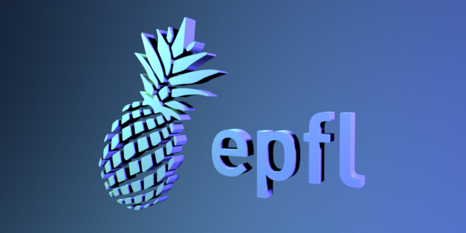
Cornell box (distributed):
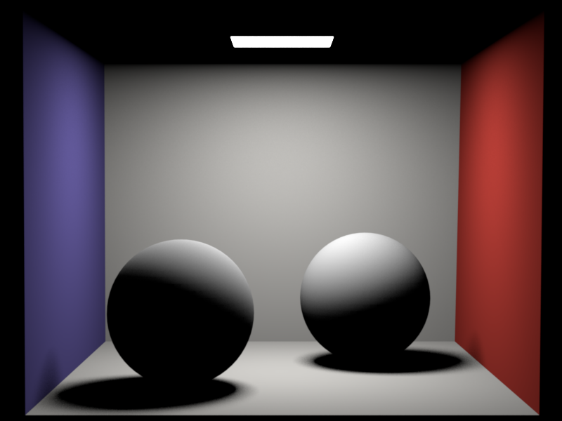
The algorithm passed all the statistical tests in `scenes/pa4/tests`.
## Error analysis using EXR images
1. Error between **logo-diffuse.exr** and **logo-diffuse-ref.exr**
- Error between the two images is non-negligible.
- The maximum error is 0.328, minimum error is -0.300, and the mean error is 0.001.
- The error histogram of R, G, B components are roughly symmetric around zero.
- As indicated by the histogram and statistics, the error is probably due to the randomness of the rendering algorithm.
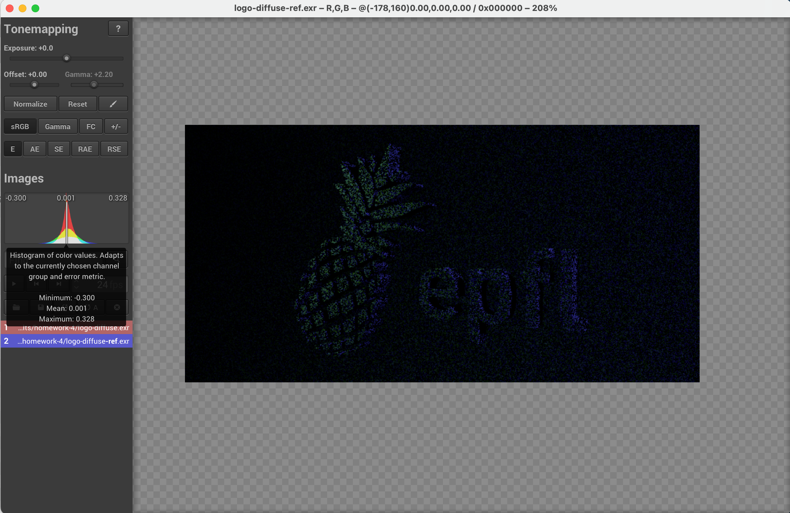
2. Error between **cbox-distributed.exr** and **cbox-distributed-ref.exr**
- Error between the two images is almost invisible except the edge of the square light source and soft shadows.
- The maximum error is 1.985, minimum error is -1.698, and the mean error is 0.000.
- The error histogram of R, G, B components are roughly symmetric around zero.
- As indicated by the histogram and statistics, the error is probably due to the randomness of the rendering algorithm. Error near the edge of the light source is exceptionally high. This is probably because the rendering algorithm is not very numerically stable when the intersection point is very close the boundary of a light source.
Dielectrics (25 pts)
====================
- `Color3f eval(const BSDFQueryRecord &) const`
- The reflection and refraction events of `Dielectric` are both based on a Dirac delta function. This means the BSDF value is 1 if the angles happen to be correct, and 0 otherwise. However, for the implementation of the `eval()` function, the probability to have exactly the correct angles is zero. Thus it is okay to simply return black, i.e. `Color3f(0.0f)` here.
- `float pdf(const BSDFQueryRecord &) const`
- For the same reason mentioned above, the probability density is always evaluated to zero for dielectrics.
- `Color3f sample(BSDFQueryRecord &bRec, const Point2f &sample) const`
- Calculates the unpolarized fresnel reflection coefficient `Fr` using the incident angel provided by `&bRec` and exterior and interior refractive indexes of this `Dielectrics` object.
- Use `sample` to determine between a reflection event and a refraction event
- If `sample <= Fr`
- This is a reflection event. In this case the exit angel in the local coordinate is obtained by multiplying the `x` and `y` components of the incident angle by -1
- The returned BSDF is `Color3f(1.0f)`
- If `sample > Fr`
- This is a refraction event. The refraction angle is computed using Snell's Law.
- `bRec.eta` is updated accordingly.
- The returned BSDF is `Color3f(1.0f) * bRec.eta * bRec.eta`, which takes into account the correction term.
Whitted-style ray tracing (10 pts)
==================================
## WhittedIntegrator
- In addition to the steps of `WhittedIntegrator` described in *Distribution Ray Tracing* section, the following steps are added to support Whitted-style ray tracing.
~~~cpp
if (!its.mesh->getBSDF()->isDiffuse()) {
BSDFQueryRecord bRec(its.toLocal(-1 * ray.d));
if (sampler->next1D() < 0.95) {
Color3f brdf = its.mesh->getBSDF()->sample(bRec, sampler->next2D());
return brdf * Li(scene, sampler, Ray3f(its.p, its.toWorld(bRec.wo))) / 0.95;
} else
return Color3f(0.0f);
}
~~~
- After finding an intersection for the camera ray, the algorithm first checks if the intersection point is specular or diffuse
- If specular, and with the probability of 0.95
- The BSDF of the intersection point is sampled to get the new ray direction following which a new ray tracing procedure will be initiated recursively
- The radiance returned by the new ray tracing procedure is multiplied by the BSDF value and divided by 0.95, and will be the return value of the original ray tracing procedure.
- With the probability of 0.05, the returned value is simply `Color3f(0.0f)`.
- If diffuse, the algorithm falls back to the previously implemented rendering procedure and no recursion is occurred.
Dielectric logo:
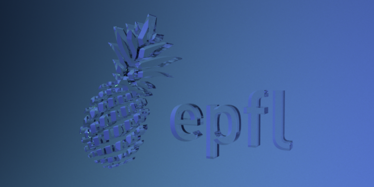
Cornell box (Whitted):
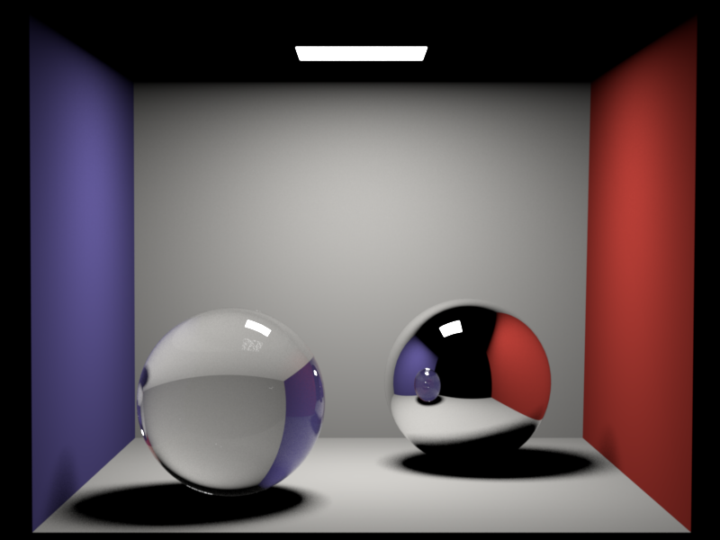
## Error analysis using EXR images
1. Error between **logo-dielectric.exr** and **logo-dielectric-ref.exr**
- Error between the two images is non-negligible.
- The maximum error is 0.835, minimum error is -0.561, and the mean error is -0.001.
- The error histogram of R, G, B components are roughly symmetric around zero.
- As indicated by the histogram and statistics, the error is probably due to the randomness of the rendering algorithm.
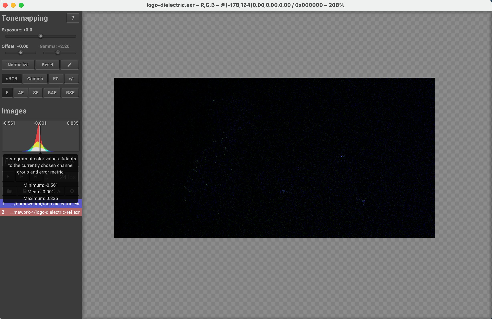
2. Error between **cbox-whitted.exr** and **cbox-whitted-ref.exr**
- Error between the two images is almost invisible except the edge of the square light source and soft shadows.
- The maximum error is 1.985, minimum error is -1.698, and the mean error is 0.000.
- The error histogram of R, G, B components are roughly symmetric around zero.
- As indicated by the histogram and statistics, the error is probably due to the randomness of the rendering algorithm. Error near the highlight area and the edge of the light source is exceptionally high. This is probably because the rendering algorithm is not very numerically stable when the intersection point is very close the boundary of a light source.
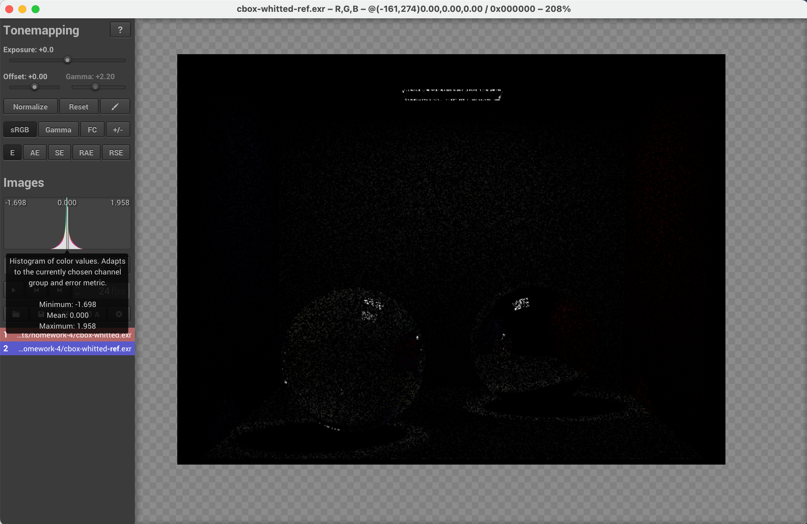
Artist Points: Interesting scene (5 points)
=======
- The following scene *Dragons fleeing Colosseum* was rendered with the Whitted-style renderer I just implemented is this assignment. The model used in this scene are all from https://free3d.com/3d-models/. Particularly, there are
- https://free3d.com/3d-model/colosseum-37887.html
- https://free3d.com/3d-model/black-dragon-rigged-and-game-ready-92023.html
- The `.xml` file and mesh files are under `./results/homework-4/artistic`
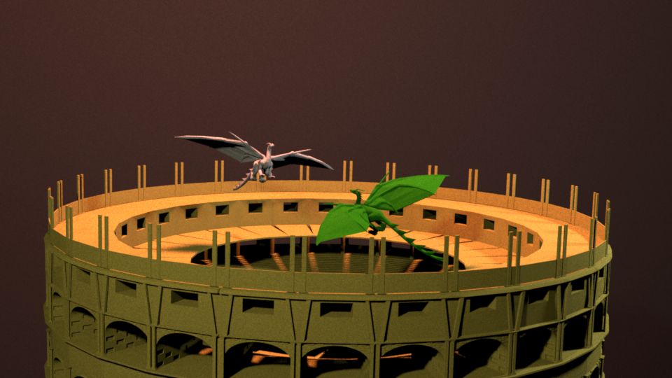
Hacker Points: Specialized Light Source Sampling (15 points)
========
## Implementation of specialized classes
- For each of the three emitters, a `Shape` subclass and a `Emitter` subclass are created
- Implementations of `Sphere`, `Disk`, and `Rectangle` are in `src/shapes.cpp`
- Implementations of `SphereEmitter`, `DiskEmitter`, and `RectangleEmitter` are in `src/emitters.cpp`
## Optimizations for three specialized emitters
- Sphere
- From any point $p$ outside the sphere emitter $S$, only part of the surface of $S$ can be seen from $p$. From the view of $p$, the visible part of $S$ forms a right circular cone, whose apex is at $p$. Therefore it is wasteful to sample the entire surface of $S$ and it will be more efficient if we could sample uniformly wrt. solid angle in the cone extended by $S$. In this way, zero contribution (wasted) samples are reduced.
- Disk
- For a point $p$ and a disk emitter $D$, the distance and normal difference between $p$ and points on $D$ may vary greatly and results in high variance samples. To reduce such variance, I replaced the original uniform disk sampling by a biased disk sampling, which favors the area closer to $p$. Particularly, radius $r$ is sampled in the same way as uniform disk sampling. For $\theta$, the point $p$ is first projected onto the plane of the disk as $p_{ref}$, whose coordinates are $(r_{ref}, \theta_{ref})$ in the local polar coordinates of $D$.
- Let $\Delta\theta \in [-\pi, \pi]$ be the difference between the sampled $\theta$ and $\theta_{ref}$, the pdf of $\Delta\theta$ is
$$
p(\Delta\theta) = \frac{1}{4}\cos\frac{\Delta\theta}{2},
$$
- Given uniform random variable $\xi \in [0, 1]$, $\Delta\theta$ can be sampled as
$$
\Delta\theta = 2\arcsin(2\xi - 1)
$$
- Rectangle
- I tried to reduce the clumping of samples because of independent sampling on a rectangle emitter via stratified sampling. Given two parameters $n_x$ and $n_y$, the entire rectangle is divided into a grid of $n_x\times n_y$ and sampled points will have a better distribution over the entire emitter. This optimization can reduce the variance due to bad distribution of samples especially when the point being rendered is very close the emitter.
## Variance improvement
- Here the variance of a image is computed as the mean of the variance of each pixel.
- The variance of a pixel is defined as the root-mean-square deviation of the value returned by `integrator->Li()` function at such pixel.
- The test scene is based on `cbox-distributed.xml`, while the area light emitter is replaced with specialized emitters. The number of sample per pixel is 128 for all tests.
- As I used stratified light source sampling for rectangle, the number of samples is different in this case.
- For the non-optimized rectangle emitter, there are 512 samples per pixel while one point is sampled on the emitter in each case.
- For the optimized rectangle emitter with stratified sampling, there are 32 samples per pixel while $4\times4$ points are sampled on the emitter in each case.
| Sphere | Disk | Rectangle
:---- | :----: |:----:| :----:
non-optimized | 0.604 | 0.189 | 0.735
optimized | 0.046 | 0.153 | 0.177
## Comparison of a scene featuring all emitters
- Scene is based on `cbox-distributed.xml`. The number of sample per pixel is 512
- The scene rendered with optimized emitters is shown on the left side below, and the scene rendered with non-optimized emitters is shown on the right size (using the same method as area lights).
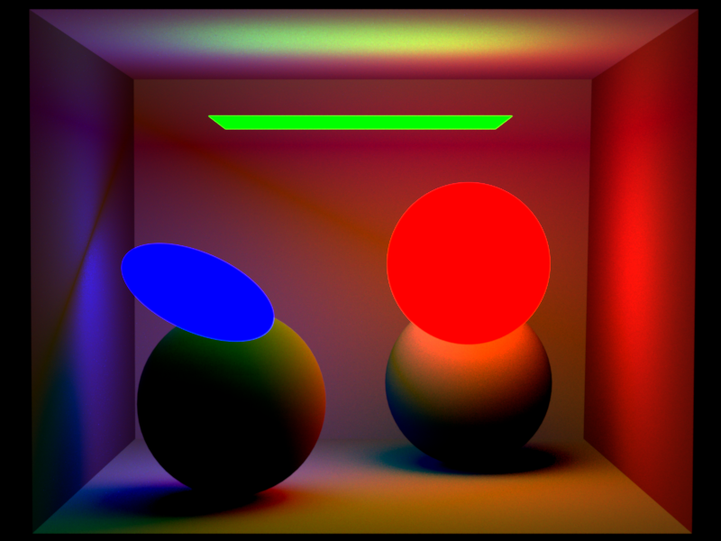
## Citations for any papers/ideas that you relied on.
- Idea and implementation of the sphere specialized emitter are based on PBRT pp. 840-845
- The design of classes `Emitter` and `Shape` borrowed many ideas from the design of classes `Light` and `Shape` in PBRT
- Idea and implementation of the disk specialized emitter are from myself
- Idea and implementation of the rectangle specialized emitter are from PBRT pp.437
- All the `.xml` scenes used in the hacker point are under `./scene/pa4/cbox`, rendered images are under `./results/homework-4/other_img`
 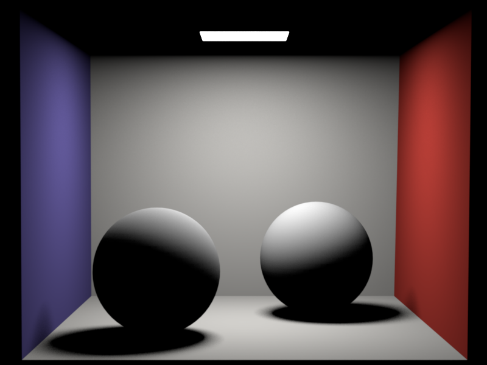
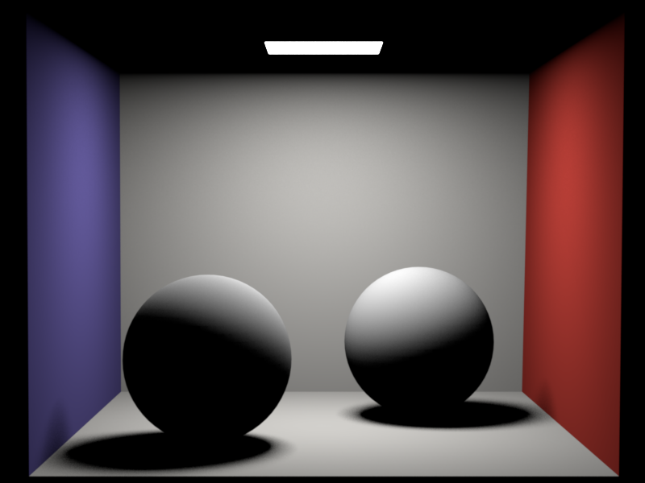
 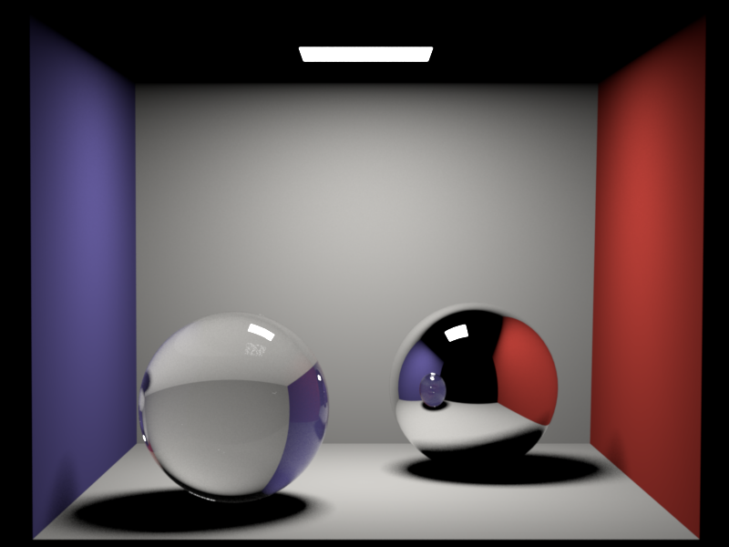
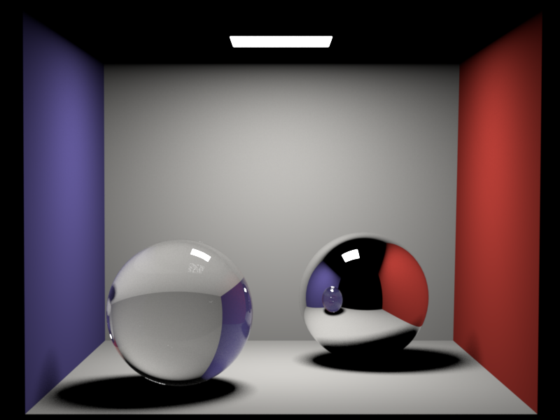